Enterprise Incident Response
Project Overview
This project demonstrates a structured incident response investigation within the MaryShield Cyber Lab using telemetry collected from Splunk Enterprise, Wazuh XDR, Security Onion, pfSense, Windows Event Logs, Sysmon, and other security monitoring platforms.
The objective is to identify, investigate, contain, eradicate, and recover from simulated security incidents generated within the controlled lab environment.
The project follows an enterprise incident response workflow that includes detection, triage, evidence collection, investigation, containment, eradication, recovery, and post-incident review.
All attack simulations documented in this case study were performed only against authorized systems within the isolated MaryShield Cyber Lab.
Incident Response Lifecycle
The incident response process follows a structured workflow designed to reduce impact, preserve evidence, restore normal operations, and improve future detection and prevention capabilities.
1. Preparation
Ensure logging, monitoring, documentation, response procedures, and security tools are available before an incident occurs.
2. Detection & Analysis
Identify suspicious behavior and determine whether it represents a legitimate security incident.
3. Containment
Limit the scope and impact of the incident while preserving evidence for investigation.
4. Eradication
Remove malicious artifacts, vulnerable configurations, unauthorized accounts, or other root causes.
5. Recovery
Restore affected systems and verify that normal and secure operations have resumed.
6. Lessons Learned
Document findings, identify improvements, and update monitoring and defensive controls.
Enterprise Incident Response Architecture
The architecture below shows how endpoint, network, firewall, and SIEM telemetry are collected and correlated during an incident investigation.
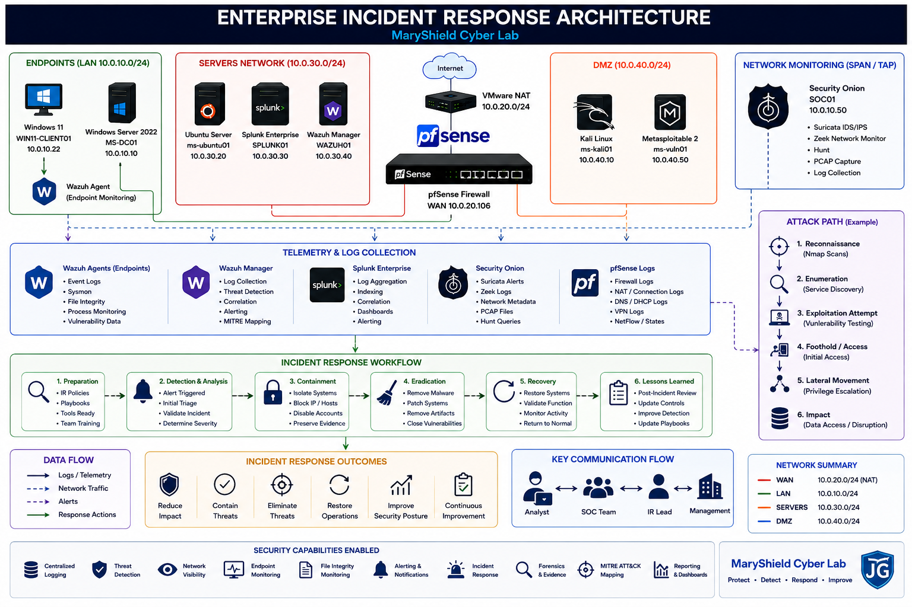
Incident Detection
The investigation begins when suspicious behavior is identified through SIEM alerts, endpoint telemetry, firewall logs, IDS signatures, or analyst threat-hunting activity.
Detection Sources
- Splunk Enterprise alerts and searches
- Wazuh XDR security events
- Security Onion Suricata alerts
- Zeek network metadata
- pfSense firewall logs
- Windows Security Events
- Sysmon telemetry
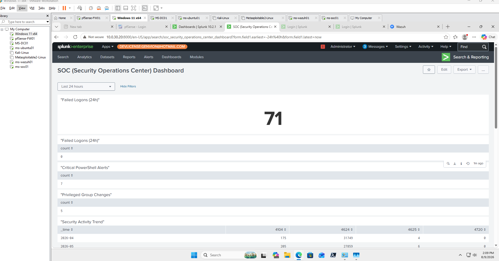
Initial Triage
Initial triage determines the severity, scope, affected systems, and potential impact of the suspected incident.
| Category | Investigation Question |
|---|---|
| Source | Where did the suspicious activity originate? |
| Target | Which endpoint or service was affected? |
| Severity | How serious is the observed behavior? |
| Timeline | When did the activity begin? |
| Scope | How many systems or users are affected? |
| Impact | What security or operational impact occurred? |
Evidence Collection
Evidence was collected from multiple security platforms to preserve a reliable record of activity associated with the incident.
SIEM Evidence
Splunk searches, dashboards, event logs, timestamps, hosts, and alert information.
Endpoint Evidence
Wazuh alerts, Windows Event Logs, Sysmon data, processes, users, and file changes.
Network Evidence
Security Onion alerts, Zeek metadata, Suricata signatures, PCAP, and connection records.
Firewall Evidence
pfSense allow, block, NAT, routing, and state information associated with suspicious traffic.
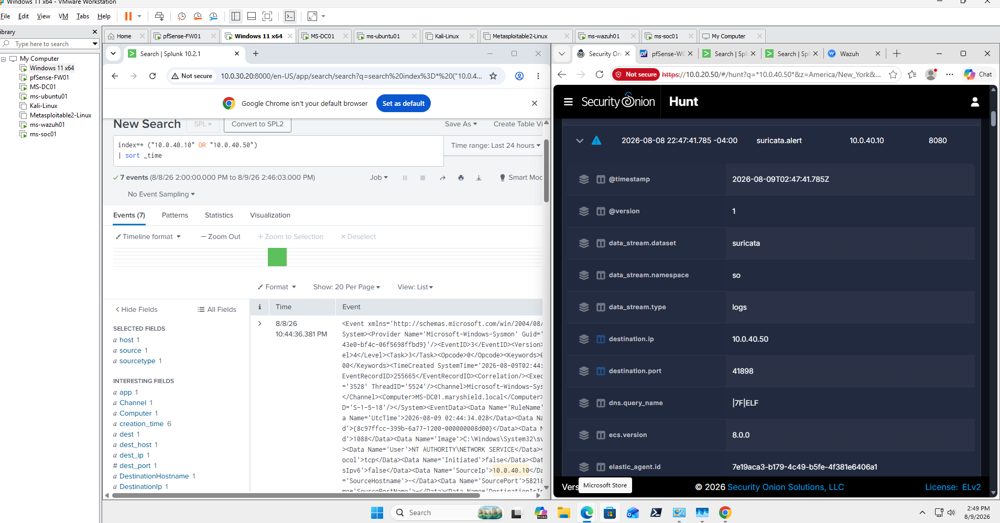
Log Analysis
Centralized logs were reviewed to identify suspicious patterns, establish context, and correlate events across affected systems.
Splunk Investigation
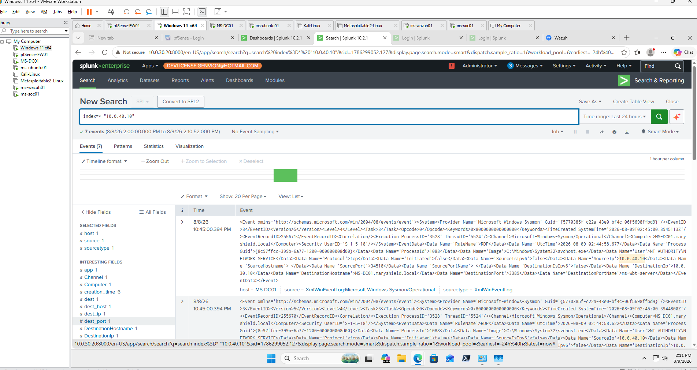
Network Investigation
Network telemetry was analyzed to identify suspicious connections, protocols, source and destination addresses, and potential attacker activity.
Security Onion
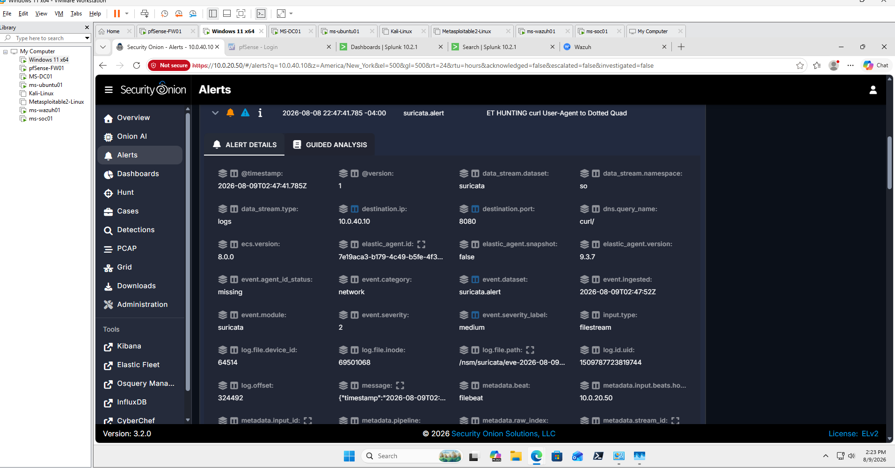
pfSense
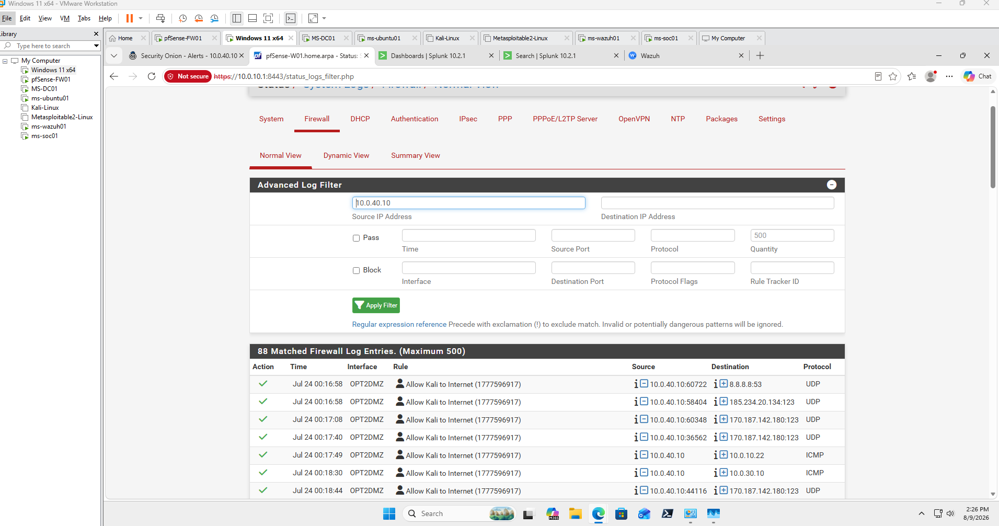
Endpoint Investigation
Endpoint telemetry was reviewed to identify suspicious processes, file changes, authentication events, configuration changes, and other host-level activity.
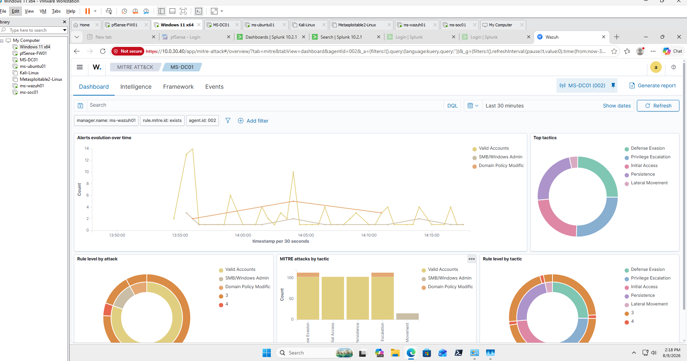
Incident Timeline Reconstruction
Evidence from all monitoring platforms was organized chronologically to reconstruct the incident from initial activity through investigation and response.
| Stage | Observed Activity | Evidence Source |
|---|---|---|
| 1 | Initial reconnaissance | Security Onion / pfSense |
| 2 | Port and service discovery | Zeek / Suricata |
| 3 | Suspicious connection activity | Security Onion / pfSense |
| 4 | Endpoint activity generated | Wazuh / Sysmon |
| 5 | Events correlated | Splunk Enterprise |
| 6 | Incident confirmed | SOC investigation |
| 7 | Containment initiated | Incident Response |
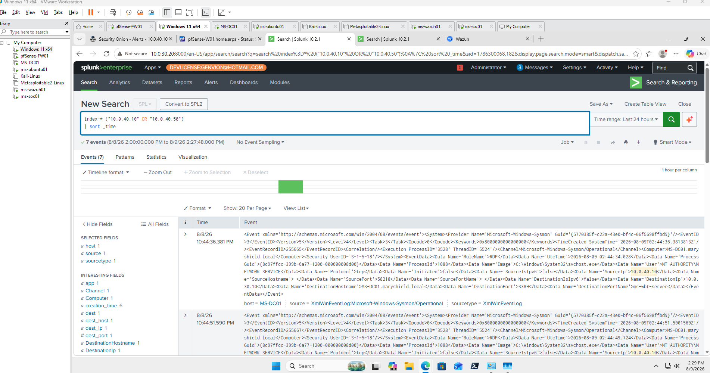
Containment
Containment actions were designed to limit additional exposure while preserving evidence and maintaining visibility into the incident.
Containment Actions
- Block suspicious source addresses at the firewall.
- Restrict communication between affected security zones.
- Isolate affected endpoints when necessary.
- Disable compromised or suspicious accounts when appropriate.
- Preserve logs and investigation evidence.
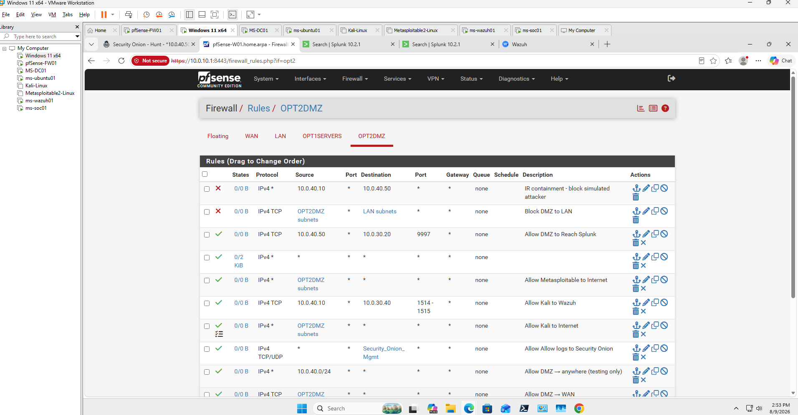
Eradication
After containment, the underlying cause of the incident was addressed to prevent recurrence.
Eradication Activities
- Remove unauthorized files or processes.
- Patch vulnerable software.
- Correct insecure configuration settings.
- Remove unauthorized accounts or permissions.
- Reset affected credentials where required.
- Verify systems are free from known malicious artifacts.
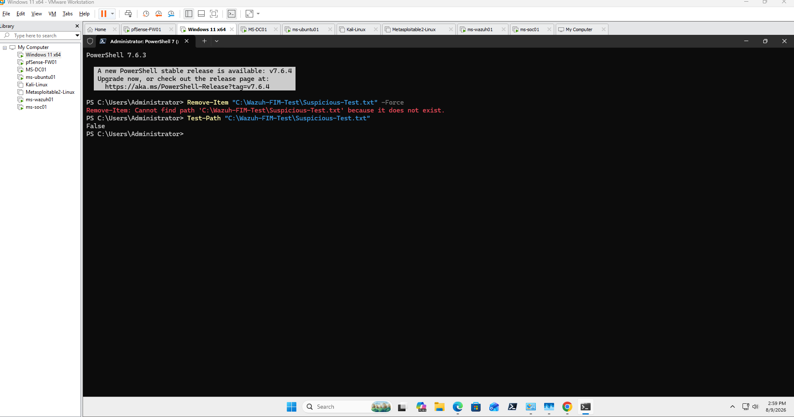
Recovery
Affected systems were returned to normal operation only after verifying that remediation was successful and security monitoring remained functional.
Recovery Validation
- Verify system services are functioning normally.
- Confirm network connectivity.
- Verify security agents remain active.
- Confirm centralized logging continues.
- Review new alerts for recurring suspicious behavior.
- Validate firewall and segmentation controls.
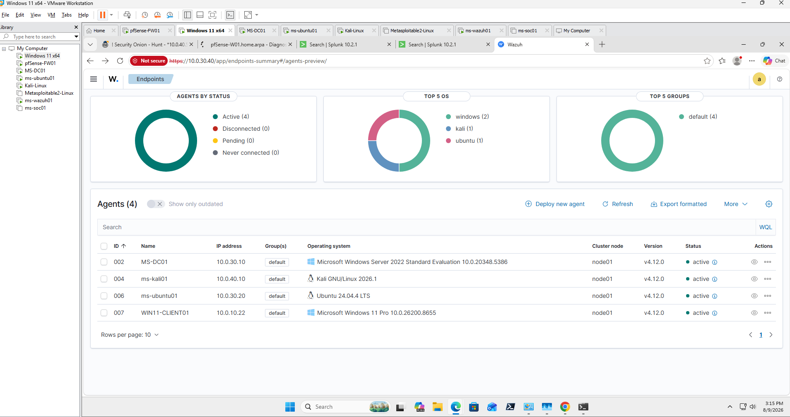
Final Incident Response Report
The final report summarizes the incident, affected systems, evidence collected, containment actions, remediation steps, recovery validation, and recommended security improvements.
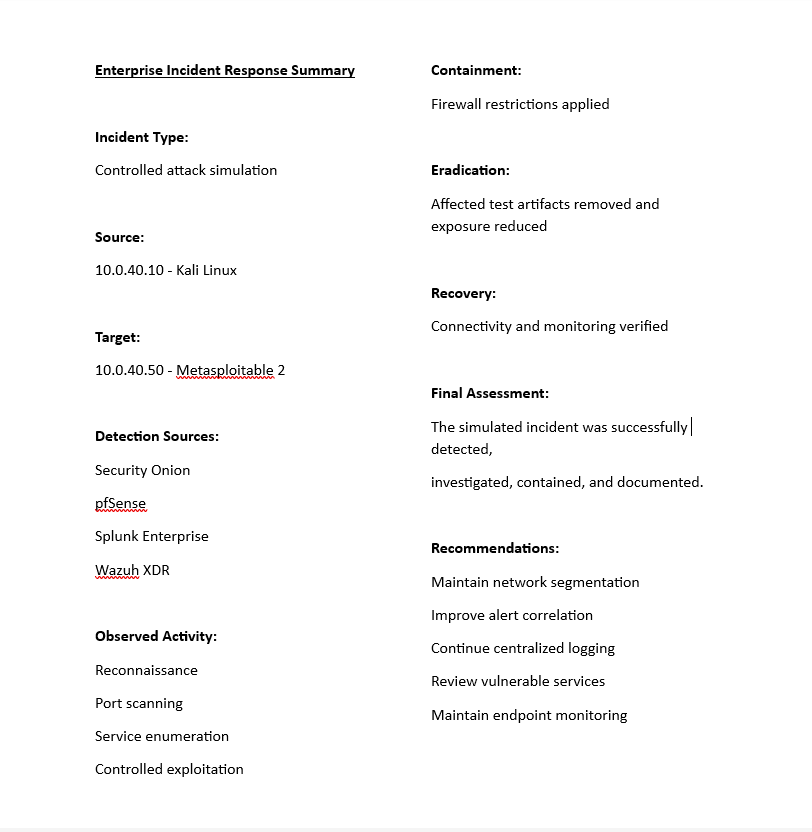
Lessons Learned
The incident response project reinforced the importance of layered monitoring, structured investigation procedures, evidence preservation, and coordinated response actions.
- Improved ability to triage and prioritize security events.
- Strengthened cross-platform event correlation skills.
- Improved familiarity with endpoint and network investigation workflows.
- Developed experience constructing incident timelines.
- Reinforced the importance of evidence preservation.
- Improved understanding of containment strategies.
- Strengthened knowledge of eradication and recovery procedures.
- Demonstrated the value of network segmentation and least privilege.
- Improved incident documentation and reporting skills.
- Identified opportunities for improved detection engineering.
Skills Demonstrated
Incident Triage
Evaluated security events to determine severity, scope, and impact.
SIEM Analysis
Used Splunk Enterprise for searching, correlation, and timeline reconstruction.
Endpoint Investigation
Used Wazuh and Windows telemetry to investigate affected systems.
Network Investigation
Analyzed Security Onion, Zeek, Suricata, and packet evidence.
Firewall Analysis
Reviewed pfSense traffic and applied network containment controls.
Evidence Collection
Collected and correlated security evidence across multiple tools.
Timeline Analysis
Reconstructed incident activity chronologically across multiple data sources.
Containment & Recovery
Documented containment, remediation, and recovery procedures.
Related Projects
Explore related MaryShield Cyber Lab projects that support enterprise incident response and security operations.
Threat Hunting
Proactive investigation and correlation of suspicious activity across security platforms.
View ProjectSplunk Enterprise
Centralized logging, dashboards, alerts, and security-event correlation.
View ProjectSecurity Onion
Network security monitoring, IDS alerts, threat hunting, and packet analysis.
View ProjectKali Linux
Controlled offensive security activity used to generate realistic investigation telemetry.
View ProjectMetasploitable 2
Intentionally vulnerable target used for controlled attack simulation.
View ProjectActive Directory
Enterprise identity and authentication environment used in security investigations.
View Project